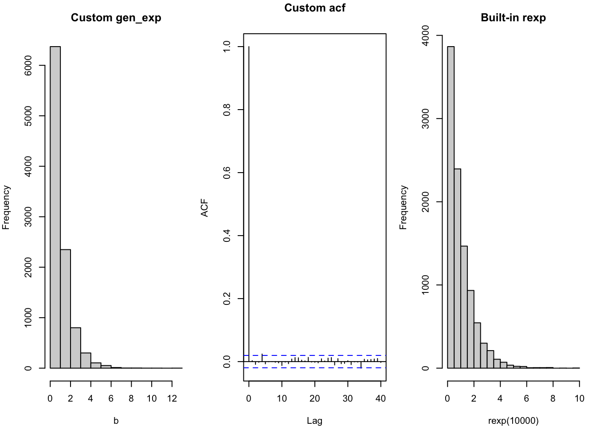
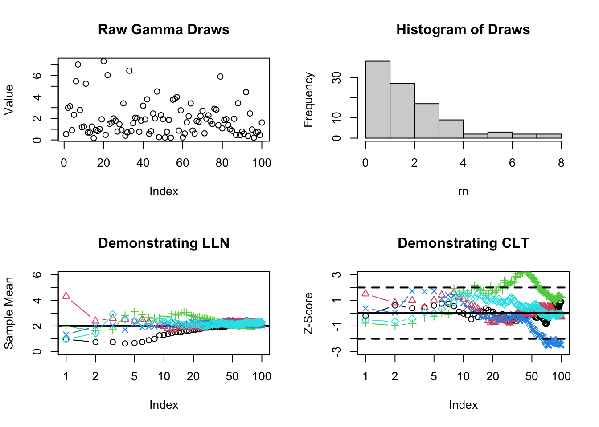
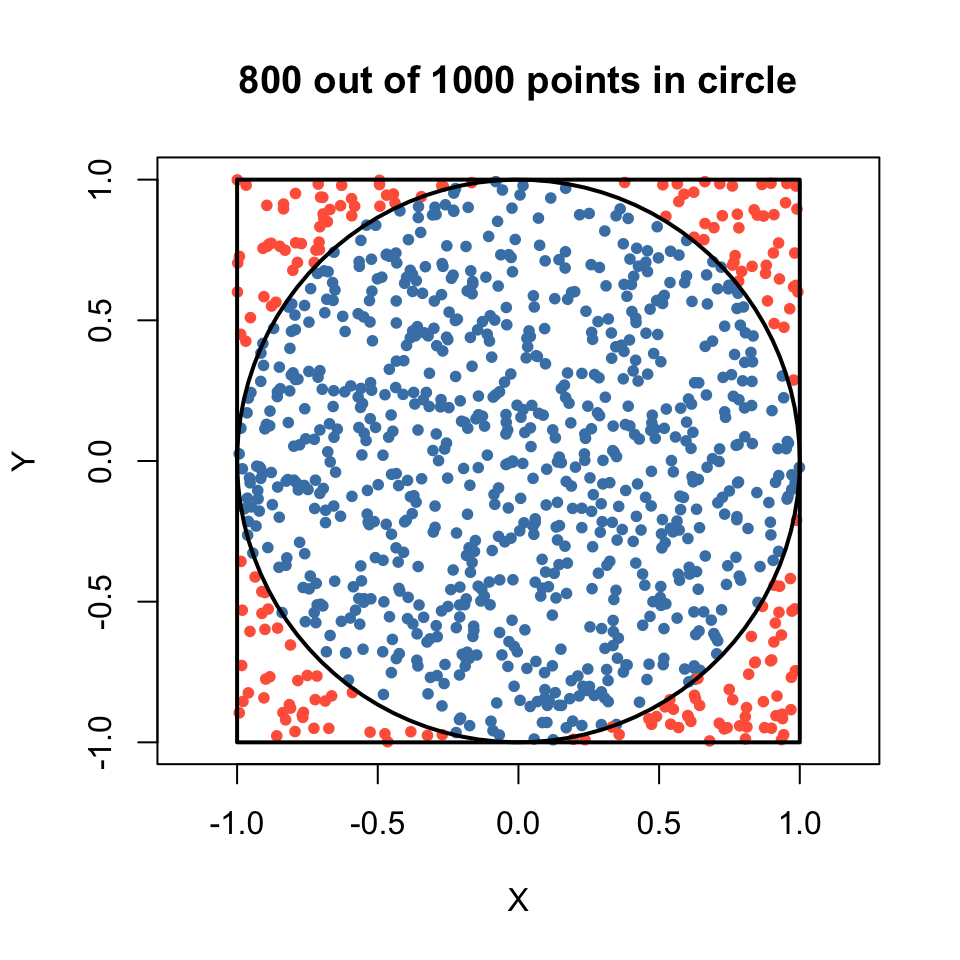

Computers generate “random” numbers using deterministic algorithms. One of the most common methods is the Linear Congruential Generator (LCG). It produces a sequence of pseudo-random integers \(X_n\) defined by the recurrence relation:
\[
X_n = (a X_{n-1} + c) \pmod M
\]
where \(X_0\) is the seed, \(a\) is the multiplier, \(c\) is the increment, and \(M\) is the modulus. To get numbers in the interval \([0,1]\), we divide by \(M-1\). In this example, we use the parameters \(a = 7^5\), \(c = 0\), and \(M = 2^{31}-1\) (a minimal standard LCG).
Code
A <-7^5M <-2^31-1N <-500rn <-rep (0, N)rn[1] <-10# Initial seedfor (i in2:length (rn)){ rn[i] <- (A * rn[i-1] ) %% M}# Scale the numbers to fall between 0 and 1nrn <- rn/(M-1)par(mfrow=c(1,3),mar=c(4,4,3,1))plot(nrn[1:100], main="Trace Plot", ylab="Value", xlab="Index")acf(nrn, main="Autocorrelation")hist(nrn, main="Histogram")
If we can generate uniform random variables \(U \sim \text{Unif}(0,1)\), we can generate a random variable \(X\) from any continuous distribution using the Inverse Transform Method. If \(F(x)\) is the cumulative distribution function (CDF) of \(X\), then \(X = F^{-1}(U)\) has the desired distribution.
For an Exponential distribution with rate \(\lambda = 1\), the CDF is \(F(x) = 1 - e^{-x}\). Setting \(U = 1 - e^{-x}\) and solving for \(x\) gives:
\[
x = -\ln(1-U)
\]
Code
# generate exponential random numbers# use method of inverse cdf to generate iid sample from exp(1)gen_exp <-function(n){#generate unif(0,1) random numbers u <-runif(n)#transform the random numbers-log(1-u)}b <-gen_exp(10000)par(mfrow=c(1,3),mar=c(4,4,3,1))hist(b, main="Custom gen_exp")acf(b, main="Custom acf")## r built-in generator for comparisonhist(rexp (10000), main="Built-in rexp")

6 A Special Transformation for Generating Normal Sample
The Box-Muller Transform is an elegant method for generating pairs of independent Standard Normal random variables from independent Uniform random variables. It relies on converting cartesian coordinates \((X,Y)\) into polar coordinates \((R, \theta)\).
If \(X, Y \sim N(0,1)\) are independent, their squared radius \(R^2 = X^2 + Y^2\) follows an Exponential distribution with rate \(\lambda = 1/2\), and their angle \(\theta\) is uniformly distributed over \([0, 2\pi]\). By generating \(R\) and \(\theta\), we can map them back to Normal variables:
\[
X = R\cos(\theta) \quad \text{and} \quad Y = R\sin(\theta)
\]
Code
gen_normal <-function(n){# calculates size of random samples (we generate pairs, so we need half) size_sample <-ceiling(n/2)# R^2 ~ Exp(1/2), so we take the square root to get R R <-sqrt(2*rexp(size_sample)) theta <-runif(size_sample,0,2*pi) X <- R*cos(theta) Y <- R*sin(theta)c(X,Y)[1:n] }normal_sample <-gen_normal(1000)par(mfrow=c(1,2),mar=c(4,4,1,1))hist(normal_sample,main="Custom Normal")qqnorm(normal_sample, main="Custom QQ")qqline(normal_sample)
The Law of Large Numbers (LLN) states that as the sample size \(n\) grows, the sample mean \(\bar{X}_n\) converges to the expected value \(\mu\): \[
\bar{X}_n \to \mu \quad \text{as} \quad n \to \infty
\]
The Central Limit Theorem (CLT) states that the standardized sample mean converges in distribution to a Standard Normal \(N(0,1)\): \[
Z = \frac{\bar{X}_n - \mu}{\sigma/\sqrt{n}} \xrightarrow{d} N(0,1) \quad \text{as} \quad n \to \infty
\]
Here we draw from a Gamma distribution with shape parameter \(\alpha = 2\) and rate \(\beta = 1\). The theoretical mean is \(\mu = \alpha/\beta = 2\), and the variance is \(\sigma^2 = \alpha/\beta^2 = 2\).
Code
n <-100rn <-rgamma(n, shape =2)par(mfrow =c(2,2))plot(rn[1:100], main="Raw Gamma Draws", ylab="Value")hist(rn, main="Histogram of Draws")# Calculate running averages (LLN)xbar.rep <-replicate(5, cumsum(rgamma(n, shape =2))/(1:n))# Calculate running standardized means (CLT)se.rep <-replicate(5, (cumsum(rgamma(n, shape =2))/(1:n) -2) /sqrt(2/(1:n)))# Plot LLN: should converge to mu = 2plot(xbar.rep[,1], main ="Demonstrating LLN", log ="x", type ="b", ylim =c(0, 6), ylab="Sample Mean")abline(h =2, lwd=2)for (i in2:ncol(xbar.rep)) points(xbar.rep[,i], col = i, pch = i, type ="b")# Plot CLT: should stabilize within roughly [-3, 3] standard deviationsplot(se.rep[,1], ylim =c(-3,3), type="b", log ="x", main="Demonstrating CLT", ylab="Z-Score")for (i in2:ncol(se.rep)) points(se.rep[,i], col = i, pch = i, type ="b")abline(h =c(0, -2, 2), lty =c(1,2,2), lwd=2)

8 An Example of Monte Carlo for Estimating \(\pi\)
We can estimate the value of \(\pi\) by throwing random darts at a square with side length 2 (from \(-1\) to \(1\)) and counting how many land inside the inscribed circle of radius \(1\).
The area of the square is \((2)^2 = 4\), and the area of the circle is \(\pi(1)^2 = \pi\). Therefore, the probability that a uniform random point \((X,Y)\) falls inside the circle is: \[
P(X^2 + Y^2 \le 1) = \frac{\text{Area of Circle}}{\text{Area of Square}} = \frac{\pi}{4}
\]
8.0.1 Visualizing the Method
Before we estimate \(\pi\), let’s visually simulate throwing 1,000 darts:
Code
set.seed(123)n_visual <-1000x_pts <-runif(n_visual, -1, 1)y_pts <-runif(n_visual, -1, 1)inside_circle <- (x_pts^2+ y_pts^2) <=1# Plot pointsplot(x_pts, y_pts, col =ifelse(inside_circle, "steelblue", "tomato"), pch =20, asp =1, xlab ="X", ylab ="Y", main =paste(sum(inside_circle), "out of", n_visual, "points in circle"))# Draw the boundariesrect(-1, -1, 1, 1, border ="black", lwd =2)theta_seq <-seq(0, 2*pi, length.out =100)lines(cos(theta_seq), sin(theta_seq), col ="black", lwd =2)

8.0.2 The Monte Carlo Estimate
If we define an indicator variable \(I_i\) that equals 1 if the \(i\)-th dart lands in the circle and 0 otherwise, then \(E[I_i] = \pi/4\). We define \(Z_i = 4 \times I_i\), which gives \(E[Z_i] = \pi\).
Our Monte Carlo estimate \(\hat{\pi}\) is the sample average of the \(Z_i\) values: \[
\hat{\pi} = \bar{Z} = \frac{1}{n}\sum_{i=1}^n Z_i
\]
The Standard Error (SE) measures the uncertainty of our estimate. Using the sample standard deviation \(S_Z\), the 95% margin of error is calculated as: \[
\text{Margin of Error} = 1.96 \times \text{SE} = 1.96 \times \frac{S_Z}{\sqrt{n}}
\]
8.0.3 Results by Sample Size
We encapsulate the logic in a function and track how precision improves as \(n\) increases. The table below outlines our findings.
Code
library(knitr)# n is the number of samples drawn uniformly from the rectangle (-1,1) * (-1,1)# an estimate of pi is returnedpi_est_mc <-function(n){ X <-runif(n,-1,1) Y <-runif(n,-1,1)# 4 times the indicator function Z <-4* (X^2+ Y^2<=1) mu <-mean(Z) error <-1.96*sd(Z) /sqrt(n)list(n = n, pi.est = mu, error.95perc = error, ci.lower = mu - error, ci.upper = mu + error)} # Run the estimation for varying sample sizessample_sizes <-c(100, 10000, 100000, 10000000)results_list <-lapply(sample_sizes, pi_est_mc)# Combine results into a dataframe for tabular displayresults_df <-data.frame(N =sapply(results_list, function(x) x$n),Estimate =sapply(results_list, function(x) x$pi.est),Error_Margin =sapply(results_list, function(x) x$error.95perc),CI_Lower =sapply(results_list, function(x) x$ci.lower),CI_Upper =sapply(results_list, function(x) x$ci.upper))# Render the formatted tablekable(results_df, col.names =c("Sample Size (N)", "Estimated Pi", "95% Margin of Error", "Lower CI", "Upper CI"), digits =6, caption ="Monte Carlo Estimation of Pi across different sample sizes")
Monte Carlo Estimation of Pi across different sample sizes